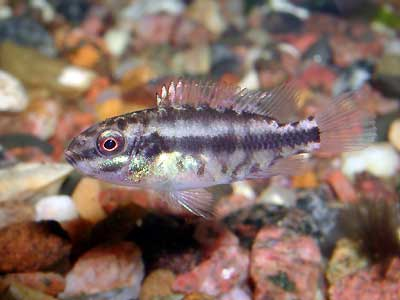

Мальки цихлиды - попугая
В начале сентября (2002г) я заменил 65 литровый аквариум из оргстекла на новый 100 литровый стеклянный аквариум китайского производства Resun с выпуклым передним стеклом.
Раньше я делал гроты из камней и из дерева, но в этот раз решил подойти к делу более современно. Для нового аквариума сделал грот из прямоугольных и круглых пластиковых труб. Обклеил их камушками на аквариумном герметике.

Получилось сооружение размером со швейную машинку с множеством укрытий для рыб и с лотками для грунта и растений. Грот лёгкий, токостенный. Объём воды не отнимает. Процесс изготовления грота, показан на странице Пластиковый грот в аквариуме .
Поместил грот в аквариум, подрастил там немного валиснерии и элодеи, и пересадил туда парочку цихлид-попугаев. Самец попугай показан на страничке Pelvicachromis pulcher .
Попугаи - вполне мирные цихлиды, подходящие для общего аквариума. В общем 180л аквариуме они уже долго примеривались отложить икру в кокосе, но что-то их раньше не устраивало.

Брачные танцы
В первые же дни после появления грота цихлиды-попугаи занялись брачными танцами и поиском места для икры.

Потом рыбы скрылись в гроте, и несколько дней я их почти не видел. Наверно, в семье всё в порядке, они отложили икру. Ухаживают за ней и сторожат. Так что в середине октября в аквариуме появилось много-много мальков.

Чтобы их развлечь, я подсадил в новый аквариум 3 вишнёвых барбуса, 1 анциструса и 1 лабео биколор . Попугаи стали нападать на новичков. Новые рыбки обычно скрывались за фильтром, хотя обычно барбусы не заплывают в тесные места. Заплыть в грот не удалось даже смелой лабео, хотя в гроте было множество входов и выходов.
Все внутренние объёмы грота сообщаются. Получился дом на одного хозяина. В следующий раз надо это учесть. Кроме того, когда буду делать грот для 180 литрового аквариума, нужно будет использовать тёмный пластик. Это смотрелось бы лучше. Первый грот я не фотографировал, так как ничего особо красивого в нём нет. На страничке о том, как я делал грот, приведены фото второй версии. Рыбам понравились оба.
Когда, наконец, родители вывели стаю мальков на прогулку я их посчитал. Всего было штук 40, размером 4мм. Попугаи пасли их по очереди: один плавает рядом с мальками, другой гоняет прочих рыб.
Попугайчик 2 недели. Размер 10мм.
В какой-то момент, когда мальки подросли, оказалось, что их осталось 20-30. Конечно, мне и 20 новых попугаев много, но интересна причина их убыли. Я видел, как самец берёт в рот далеко уплывшего малька и возвращает его в стаю.
У самки это не получается. У неё вообще проблемы с питанием. Самец иногда ест мотыля, а самка не может его толком схватить - рот не открывается. Выходит, что самец переносит мальков сознательно, понимая, что их есть нельзя.
Наверно природа устроила такую защиту, чтобы самка не слопала мальков раньше времени. Но это ей как раз удаётся. Она берёт в рот малька, наверно, чтобы перенести его в другое место. Малёк сам заплывает ей в рот, как только она его достаточно откроет. Но выплюнуть малька она не может. Делает несколько попыток, ничего не получается, и она его проглатывает. В одной книжке я уже читал, что попугаи известны поеданием мальков.
В общем, дело житейское. Но при этом самка становится всё злее и злее. Она загнала за фильтр не только барбусов и лабео, но и самца. Причём нападает на них не просто чтобы напугать. Все покусаны. У самца почти не осталось хвоста, у барбусов тоже, хотя они, в отличие от самца попугая, почти всё время сидят в кустах.
Теперь она пасёт мальков сама. Самец прячется или в гроте или за фильтром, вжимается в дальний угол и сидит там часами. Чем это кончится, увидим.
2.5 недели, 12мм
Попугайчикам сейчас недели две. Их около 20. Они больше 10мм длиной и довольно толстые. Прозрачные и пятнистые. Так что на фото со вспышкой полностью исчезают на фоне грунта. А без вспышки, при выдержке 1/15 секунды получаются размытыми, так как на месте не стоят.

4 недели, 16мм. Окраска ещё детская.
Барбусы тоже не дремали. За три недели жизни в новом аквариуме, и несмотря на террор первых хозяев, барбусы отметали икру, и уже несколько дней я иногда вижу малюсеньких мальков, которые в несколько раз тоньше, чем мальки попугаев. Всего барбусят штук 5. Они плавают по одиночке, и никто о них не заботится. Неизвестно, сколько их было сначала. Вишнёвый барбусёнок размером 12мм и ещё два размером 6-8мм обнаружились через месяц после поселения барбусов в новый аквариум.

Вишнёвый барбусёнок
2002-11-16
Мальки уже вполне самостоятельные. Плавают всюду, а не только тесной стайкой. Родители продолжают их охранять. Они помирились. Хвост у самца уже почти восстановился. Сейчас всего 35 мальков попугаев и 3 малька барбусов. Насчёт поедания мальков самкой я погорячился. Не было этого. Видимо недостаточно внимательно наблюдал её поведение.

Попугайчик маскируется
2002